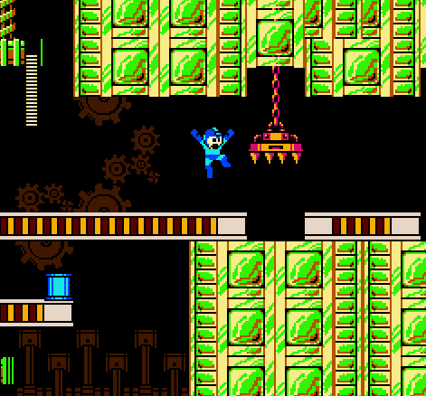

Mega Man 2 on the NES is a total blast, where you play as the blue bomber, Mega Man, taking on Dr. Wily and his rogue robot squad.
It's a wild ride through eight intense levels, each ending with a boss battle against a Robot Master.
The coolest part? Beat a boss, and you snag their special weapon, upping your game. With awesome 8-bit tunes pumping you up,
this game's a non-stop action fest and a true NES classic.
Best Good CharacterThe MAN - Mega Man!! |
Evil CharactersHeat Man Quick Man  Wood Man  |
Some Items1 - Up So when you start off in the game, you're rocking 2 extra lives. But here's the cool part – you can score more by snagging these 1-Ups. Some are chilling in set spots across different levels, while others might just pop up randomly when you knock out enemies. But heads up, those 1-Ups dropped by baddies? They vanish quick, so you gotta hustle and grab 'em fast before they're ghost! Weapon Power  Blasting with a weapon swiped from a Robot Master eats up its power. To juice it back up, grab a weapon capsule, but remember – you gotta be using that weapon to refill it. A small capsule tops up 2 units, and a big one boosts a whopping 10 units. Power management is key, you dig? Energy Tank  An Energy Tank is a game-changer – it lets you fully recharge Mega Man's health whenever you choose. You can stash up to four of these bad boys. They're pretty rare, so it's wise to save them for those really tough spots. Use 'em strategically! |
|  |